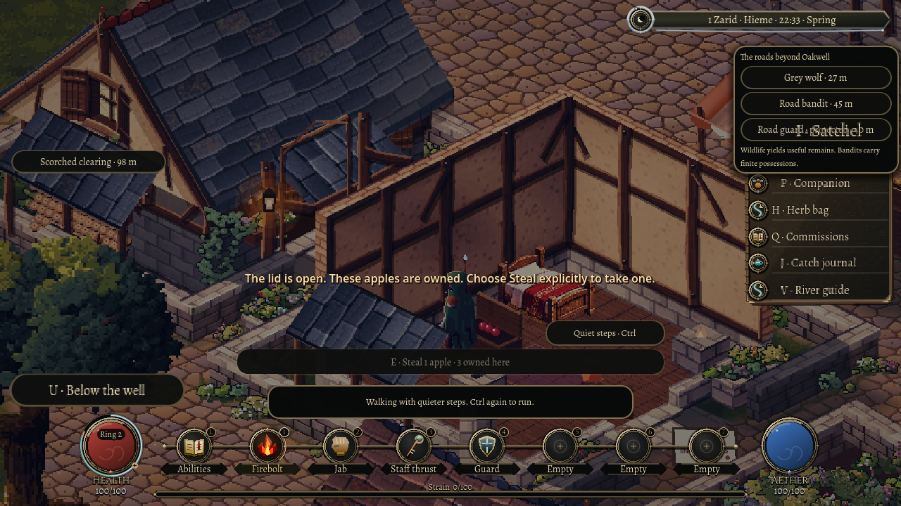
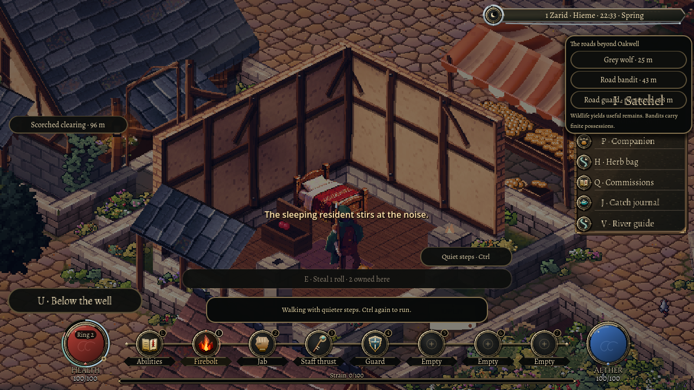
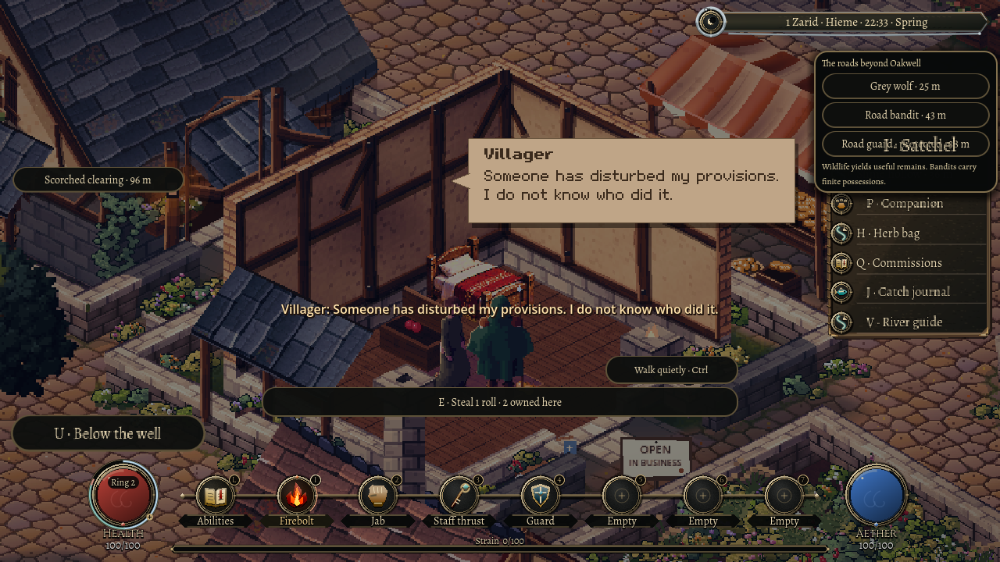

3 November 2026
When the house wakes
3 November 2026
Quiet footsteps can leave a sleeping household undisturbed. A broken pantry crock gives its owner something to investigate.
The first property encounter gave an Oakwell resident a reason to care about her home and provisions. This follow-up gives that same household a way to hear what is happening while its owner sleeps.
Move softly
The existing walk control now matters near the cottage. Slower walking makes softer footfalls than running or sprinting. The same choice is available from a touch button. Footsteps follow the ground you actually cover, so pushing against a wall does not produce an endless stream of contacts.
A careful visitor can enter through the real doorway, inspect the unlocked chest and deliberately take an apple while the owner remains asleep. Ownership still applies. The absence of a witness leaves the culprit unidentified.

An opened chest still contains owned food. Taking an apple is a separate choice.
A crash changes the night
Breaking the pantry crock produces a pottery crash. Walls reduce the sound, and distance matters. A sufficiently loud sound can make the resident stir, wake and walk toward its approximate origin.

A loud mistake changes the household's response, even when playback is muted.
She follows the same floors and routes as the town's ordinary residents. A piece of furniture in the way remains an obstacle. She needs a reachable place from which to look around, and one noise cannot send her searching forever.
Her response follows the information available. A sound gives her a direction and a reason to investigate. Seeing a new act can identify someone. Finding broken pottery can establish damage. The crash itself does not supply the name of the person who caused it.
That distinction keeps stealth meaningful. An owner can wake, find a loss and still have no supported claim against the player. Current intruders can also be noticed and warned once she is awake. She addresses that intrusion first, while the earlier noise can remain unexplained.

Discovering damaged provisions supplies a loss, rather than the name of a culprit.
Continue the same moment
Saving during the stir preserves her position, the pending wake and the time already spent. Continuing resumes that response. It does not replay the crash or grant a fresh delay before she wakes.
Part of a footstep survives too. Repeatedly saving and loading between contacts cannot keep granting another silent stretch of floor. If an old response has already expired, continuing respects that elapsed time.
Sound detection also works with playback muted. Turning down the game's audio changes what the player hears; the people in the world still respond to events around them.
One household, proved further
The checks follow a controlled night in the existing cottage, then continue from a saved stir in a new game process. They exercise ordinary controls and resident navigation, with a disclosed clock setup so the result can be reproduced.
This remains a bounded encounter. Real closable doors and locks, a placed sound-suppression rune, travelling reports and guard pursuit are further stages. The current step makes a quiet visit and a noisy mistake produce different, understandable consequences in the same home.